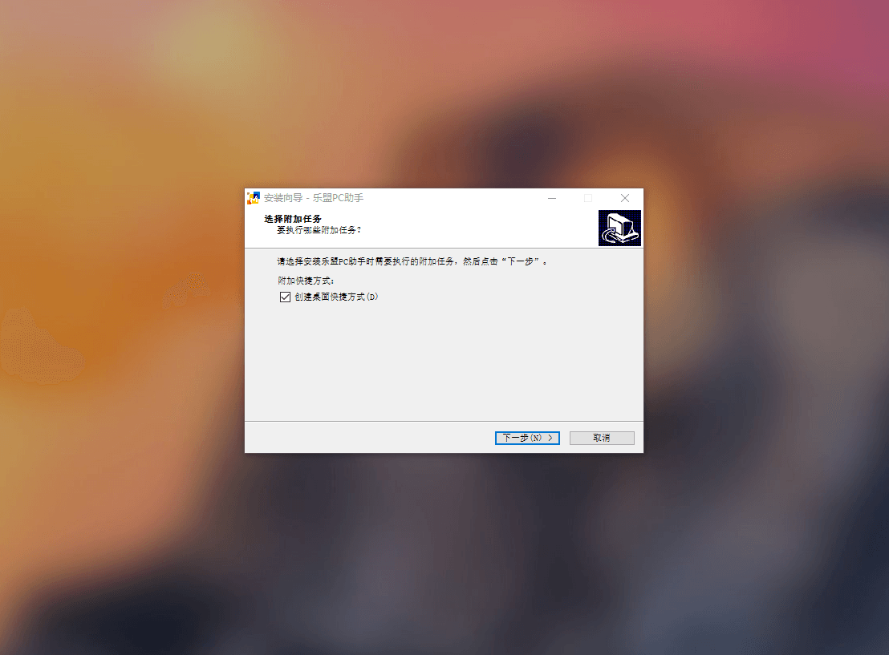
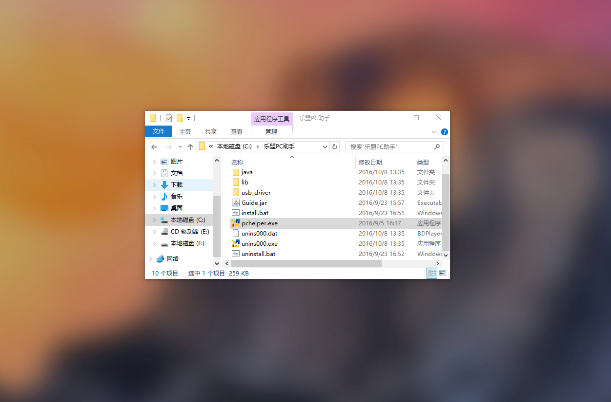
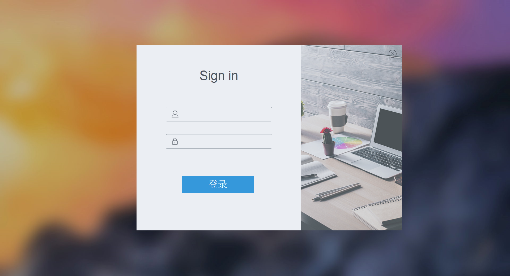
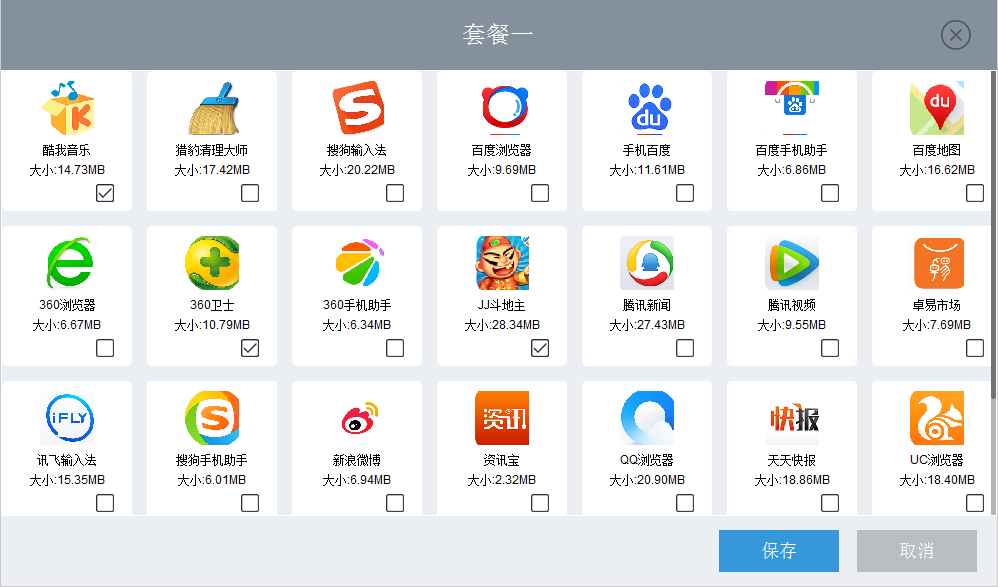
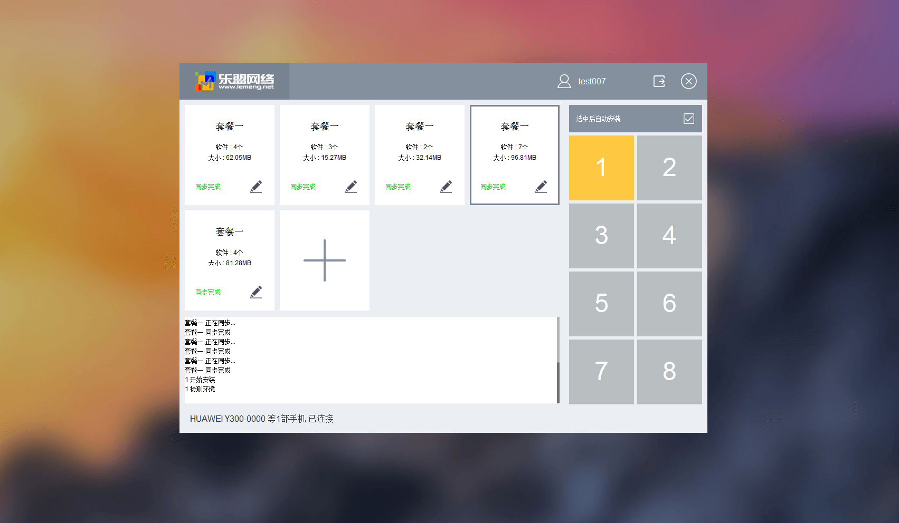

乐盟推广教程


下载乐盟pc助手并安装，建议安装到默认位置，直接点击下一步即可。
打开位于桌面的乐盟pc助手快捷方式 。（桌面上找不 到的话也可以去文件夹位置C:\Program Files (x86)\乐 盟PC助手，执行pchelper.exe程序。）
在登录页面输入平台所提供的账号和密码登录。
进入到软件界面后点击加号图标 添加套餐，选择完毕后点击保存。
套餐选择设置完毕后勾选上右上方“选中后自动安装 “选项，然后用usb数据线连接手机和电脑，此时手机界 面可能申请调试权限，点击允许，开始安装。（注意： 安装执行的为当前选择套餐，支持多部手机同时安装）
安装完成。（注意：安装时为黄色，安装完成后变为绿 色，在手机上也可以查看软件安装进度。）
注意：此时手机可能会提示启用applist组件获取使用量 信息，自动选择允许。可忽略